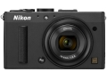

无忌
器材库
全部器材
产品年表
名词百科
榜单
器材库
> 不可换镜头数码相机 > COOLPIX A

尼康
COOLPIX A
4.08
综合评分
分类
不可换镜头数码相机
点评
0 条
图片
0 张
评测
10 篇
搭载1616万像素APS-C画幅23.6×15.6mm CMOS传感器和EXPPED 2 图像处理器。为了实现高清晰图像拍摄性能，机身内并未配备光学低通滤镜。
产品类型
不可换镜头数码相机
综合评分
4.08分
无忌评测
小即是美 尼康COOLPIX A详细评测
规格参数
网友点评
(0)
产品图 / 样片
(0)
评测文章
(10)
规格总览
发布日期
2013-03-05
厂家推荐价格
120,000.00 （日元）
停产
是
影像规格
影像传感器
CMOS
影像传感器尺寸
23.6 x 15.6mm
总像素
1693万
有效像素
1610万
影像处理器
EXPPED 2
静态图像格式
JPEG, RAW
静态图像尺寸
L (4928 x 3264) M (3696 x 2448) S (2464 x 1632)
画幅比
4:3, 16:9
短片格式
MOV, MPEG4-AVC/H.264
短片尺寸
1080（精细）/30p：1920 x 1080/约每秒30帧、1080/30p：1920 x 1080/每秒30帧、720（精细）/30p：1280 x 720/约每秒30帧、720/30p：1280 x 720/约每秒30帧
音频格式
线性立体声PCM
镜头和对焦
镜头结构
7片/5组
焦距
18.5mm
等效35mm画幅焦距
28mm
最大光圈
f/2.8
最近对焦距离
约50cm至无穷远cm, 微距10cm
自动对焦系统
对比侦测AF
对焦模式
脸部优先AF、标准区域AF、宽区域AF 及对象跟踪AF
手动对焦
支持
曝光控制
测光模式
中央重点测光, 评价测光, 点测光
场景模式
人像、风景、孩子、运动、特写、夜间人像、夜间风景、聚会/室内、海滩/雪景、落日、黄昏/黎明、宠物照片、烛光、开花、秋色、食品、剪影、高色调、低色调
快门速度
1/2000 - 30秒
曝光补偿
±2EV以1/3EV级调整
连拍
每秒约4帧
拍摄模式
自动、场景、P、S、A、M、用户设置（U1、U2）
闪光灯
内置闪光灯
弹出式
闪光涵盖范围
约0.5 - 11.5米（模式自动、自动ISO）
闪光补偿
-3 至 +1EV以1/3 EVEV级调整
外接闪光灯
SB-910、SB-900、SB-800、SB-700、SB-600、SB-400
取景规格
LCD类型
TFT LCD
LCD尺寸
3.0英寸
LCD像素
92万
视野率
100%
文件输入/输出
记录媒介
SD/SDHC, SDXC
数据接口
高速USB
视频/音频接口
HDMI Mini 输出
配件端口
热靴
电源
电池
EN-EL20
续航能力
约拍摄230张
外观
颜色
银色, 黑色
尺寸
111.0 x 64.3 x 40.3mm
重量
299g
该产品暂无存档的网友点评
该产品暂无存档的产品图
评测 / 相关文章
详细内容
（存档）
小即是美 尼康COOLPIX A详细评测
（存档）
尼康DX大底数码相机COOLPIX A 试用体会
（存档）
随身利器 尼康COOLPIX A试用
（存档）
［资讯］经典将终止 尼康Coolpix A停产
（存档）
［资讯］COOLPIX A荣获 “2014 iF产品设计大奖”
（存档）
［资讯］大底进入“微”时代——2013年P&E观礼
（存档）
［资讯］尼康首款DX格式口袋机COOLPIX A
（存档）
［资讯］尼康 Coolpix A 真机图赏
（存档）
［资讯］尼康 COOLPIX A 官方样片欣赏
（存档）
相关文章
［资讯］经典将终止 尼康Coolpix A停产
（存档）
［资讯］COOLPIX A荣获 “2014 iF产品设计大奖”
（存档）
［试用］随身利器 尼康COOLPIX A试用
（存档）
［资讯］大底进入“微”时代——2013年P&E观礼
（存档）
［试用］尼康DX大底数码相机COOLPIX A 试用体会
（存档）
［试用］小即是美 尼康COOLPIX A详细评测
（存档）
［资讯］尼康COOLPIX A
（存档）
［资讯］尼康首款DX格式口袋机COOLPIX A
（存档）
［资讯］尼康 Coolpix A 真机图赏
（存档）
［资讯］尼康 COOLPIX A 官方样片欣赏
（存档）